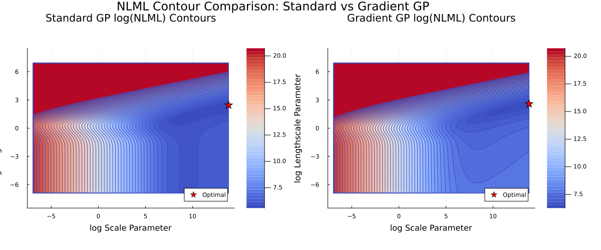

AbstractBayesOpt Tutorial: NLML Landscape Visualisation
This tutorial shows how to visualise the negative log marginal likelihood (NLML) landscape for Gaussian Process models. The NLML landscape shows how the model likelihood changes as we vary the kernel hyperparameters. Understanding this landscape is crucial for:
- Choosing appropriate hyperparameter optimisation strategies
- Understanding why some configurations converge faster than others
- Identifying potential issues like local minima or ill-conditioned regions
Setup
Loading the necessary packages.
using AbstractBayesOpt
using AbstractGPs
using Plots
using ForwardDiff
using QuasiMonteCarlo
using RandomDefine the objective function
We'll use the Himmelblau function again, as it provides a good test case with complex structure.
himmelblau(x::AbstractVector) = (x[1]^2 + x[2] - 11)^2 + (x[1] + x[2]^2 - 7)^2
∇himmelblau(x::AbstractVector) = ForwardDiff.gradient(himmelblau, x)
f_val_grad(x::AbstractVector) = [himmelblau(x); ∇himmelblau(x)];Problem Setup and Training Data
d = 2
lower = [-4.0, -4.0]
upper = [4.0, 4.0]
domain = ContinuousDomain(lower, upper)
σ² = 1e-61.0e-6Generate training data using Sobol sampling for better coverage
n_train = 75
x_train = [
collect(col) for
col in eachcol(QuasiMonteCarlo.sample(n_train, lower, upper, SobolSample()))
]75-element Vector{Vector{Float64}}:
[-3.8125, -0.8125]
[0.1875, 3.1875]
[2.1875, -2.8125]
[-1.8125, 1.1875]
[-0.8125, -3.8125]
[3.1875, 0.1875]
[1.1875, -1.8125]
[-2.8125, 2.1875]
[-2.3125, -2.3125]
[1.6875, 1.6875]
⋮
[2.09375, -3.34375]
[-1.90625, 0.65625]
[-0.90625, -2.34375]
[3.09375, 1.65625]
[1.09375, -0.34375]
[-2.90625, 3.65625]
[-2.40625, -3.84375]
[1.59375, 0.15625]
[3.59375, -1.84375]Evaluate function at training points for both model types
y_train_standard = [himmelblau(x) for x in x_train] # Standard GP: only function values
y_train_gradient = f_val_grad.(x_train); # Gradient GP: function values + gradientsSetup Gaussian Process Models
We'll create both standard and gradient-enhanced GP models using the same kernel type but configured for their respective data structures.
kernel = ApproxMatern52Kernel()
standard_model = StandardGP(kernel, σ²)
gradient_model = GradientGP(kernel, d+1, σ²)GradientGP{Float64, AbstractGPs.GP{AbstractGPs.CustomMean{AbstractBayesOpt.var"#8#9"{Vector{Float64}, AbstractBayesOpt.var"#f_mean#f_mean##0"}}, gradKernel{KernelFunctions.ScaledKernel{KernelFunctions.TransformedKernel{ApproxMatern52Kernel{Distances.SqEuclidean}, KernelFunctions.ScaleTransform{Float64}}, Float64}}}}(AbstractGPs.GP{AbstractGPs.CustomMean{AbstractBayesOpt.var"#8#9"{Vector{Float64}, AbstractBayesOpt.var"#f_mean#f_mean##0"}}, gradKernel{KernelFunctions.ScaledKernel{KernelFunctions.TransformedKernel{ApproxMatern52Kernel{Distances.SqEuclidean}, KernelFunctions.ScaleTransform{Float64}}, Float64}}}(AbstractGPs.CustomMean{AbstractBayesOpt.var"#8#9"{Vector{Float64}, AbstractBayesOpt.var"#f_mean#f_mean##0"}}(AbstractBayesOpt.var"#8#9"{Vector{Float64}, AbstractBayesOpt.var"#f_mean#f_mean##0"}([0.0, 0.0, 0.0], AbstractBayesOpt.var"#f_mean#f_mean##0"())), gradKernel{KernelFunctions.ScaledKernel{KernelFunctions.TransformedKernel{ApproxMatern52Kernel{Distances.SqEuclidean}, KernelFunctions.ScaleTransform{Float64}}, Float64}}(Matern 5/2 Kernel, quadratic approximation around d=0 (metric = Distances.SqEuclidean(0.0))
- Scale Transform (s = 1.0)
- σ² = 1.0)), 1.0e-6, 3, nothing)Prepare data for NLML computation (this is done under the hood in AbstractBayesOpt.jl)
Standard GP data structure
x_standard = x_train;
y_standard = reduce(vcat, y_train_standard);Gradient GP data structure
x_gradient = KernelFunctions.MOInputIsotopicByOutputs(x_train, d+1);
y_gradient = vec(permutedims(reduce(hcat, y_train_gradient)));Data shapes for NLML computation:
Standard GP: x=75, y=75
Gradient GP: x=225, y=225Define Parameter Ranges for NLML Landscape
We will create a grid of hyperparameter values to evaluate the NLML landscape. The parameters we will vary are:
- Length scale: Controls how quickly the function varies spatially
- Scale parameter: Controls the overall magnitude of function variations
model,
x_data,
y_data,
log_ls_range,
log_scale_range,compute_nlml_landscape (generic function with 1 method)Compute landscapes for both models
This computation may take several minutes depending on the grid resolution. We're evaluating 10,000 parameter combinations for each model type.
nlml_standard = compute_nlml_landscape(
standard_model,
x_standard,
y_standard,
log_lengthscale_range,
log_scale_range,
"Standard GP",
)
nlml_gradient = compute_nlml_landscape(
gradient_model,
x_gradient,
y_gradient,
log_lengthscale_range,
log_scale_range,
"Gradient GP",
)100×100 Matrix{Float64}:
4.57988e8 3.71559e8 3.01429e8 2.44529e8 … 2812.5 2835.94
4.57989e8 3.71559e8 3.01429e8 2.44529e8 2791.56 2815.01
4.57989e8 3.71559e8 3.01429e8 2.44529e8 2770.63 2794.07
4.57989e8 3.71559e8 3.01429e8 2.44529e8 2749.7 2773.14
4.57989e8 3.71559e8 3.01429e8 2.44529e8 2728.77 2752.21
4.57989e8 3.71559e8 3.01429e8 2.44529e8 … 2707.83 2731.28
4.57989e8 3.71559e8 3.01429e8 2.44529e8 2686.9 2710.34
4.57989e8 3.71559e8 3.01429e8 2.44529e8 2665.97 2689.41
4.57989e8 3.71559e8 3.0143e8 2.44529e8 2645.04 2668.48
4.5799e8 3.7156e8 3.0143e8 2.44529e8 2624.1 2647.55
⋮ ⋱
1.0e9 1.0e9 1.0e9 1.0e9 6.06983e8 4.98377e8
1.0e9 1.0e9 1.0e9 1.0e9 1.0e9 9.55107e8
1.0e9 1.0e9 1.0e9 1.0e9 1.0e9 1.0e9
1.0e9 1.0e9 1.0e9 1.0e9 1.0e9 1.0e9
1.0e9 1.0e9 1.0e9 1.0e9 … 1.0e9 1.0e9
1.0e9 1.0e9 1.0e9 1.0e9 1.0e9 1.0e9
1.0e9 1.0e9 1.0e9 1.0e9 1.0e9 1.0e9
1.0e9 1.0e9 1.0e9 1.0e9 1.0e9 1.0e9
1.0e9 1.0e9 1.0e9 1.0e9 1.0e9 1.0e9This provides a 100x100 grid of NLML values for each model type.
Optimal Parameters
We approximately provide the hyperparameter combinations that minimise the NLML for each model type. In AbstractBayesOpt.jl, we optimise the MLML using Optim.jl's BFGS method.
nlml_values,
log_ls_range,
log_scale_range,
title_str,
legend=:bottomright,
Optimal parameters found:
Standard GP:
Lengthscale: 11.498 (log: 2.442)
Scale: 1.0e6 (log: 13.816)
NLML: 263.478
Gradient GP:
Lengthscale: 13.219 (log: 2.582)
Scale: 1.0e6 (log: 13.816)
NLML: 524.945NLML Landscape Plots
These contour plots show the NLML landscape for both model types. The star indicates the optimal hyperparameter combination found through the approximate minimisers over the 100x100 grid. Darker blue regions correspond to lower NLML values (better likelihood).
This page was generated using Literate.jl.